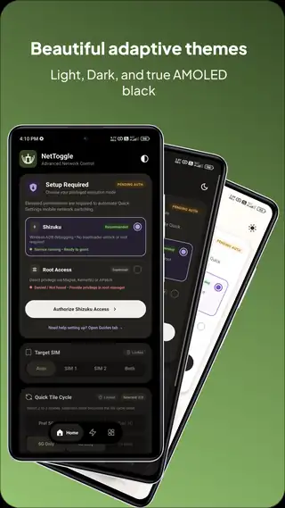
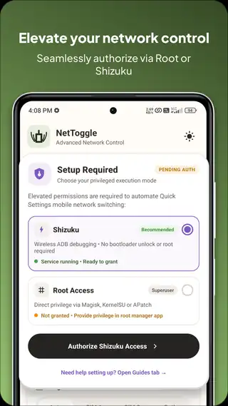

NetToggle
أدوات النظام
NetToggle is a lightweight Android Quick Settings (QS) tile app for cellular network control. Create custom tile cycles, target one or both SIMs, build shortcuts, secure broadcast automation, and troubleshoot failures with detailed diagnostics. ⚙️ NETWORK MODES Preferred 5G (5G/4G/3G/2G) : Recommend
✓ ترخيص مفتوح (GPL-3.0-only) · آخر تحديث: 2026-09-16
1.2.0الإصدار
279 KBالحجم
GPL-3.0-onlyالرخصة
Open in Kanzتحميل APK (279 KB)
Download APK
SHA-256: 9fc7641873930508079bd8d37e680300c3f7df753aa99c6471ce68b9d4b3dc3a


امسح الكود لفتح صفحة التطبيق
Scan to open this app page
لو كنز مش متثبت عندك: نزّل متجر كنز.
Not installed? Get the Kanz store.